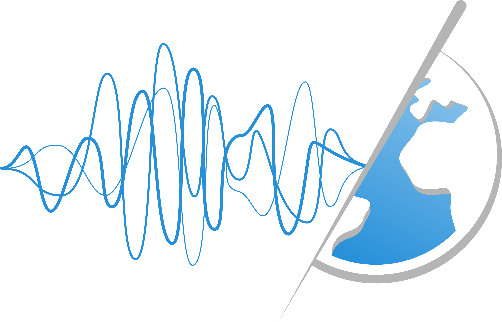
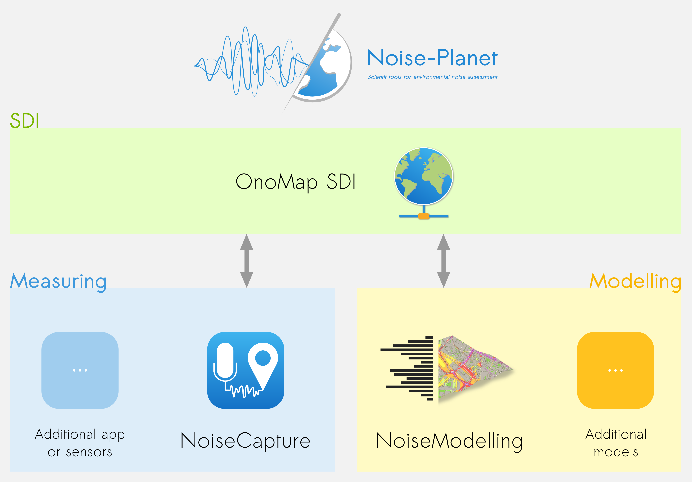

The ProjectThe Noise-Planet project aims to provide a global and generic framework dedicated to the collect, the modelisation and the assessment of environmental noise measures.
This project is divided in three main parts:

This module is dedicated to the noise measuring. Data can comes from different sources such as smartphone applications, sensors....
At the moment, this module is only feeded by the NoiseCapture Android application.
This module deals with tools developed and used to modelize noise propagation and to compute noise maps.
One of the main tools presented here is NoiseModelling (formerly NoiseM@p), a plugin for the GIS OrbisGIS.
OnoMap is a Spatial Data Infrastructure (SDI) and stands for "Open noise Map". It is a central component in the Noise-Planet project because it provides all the tools to store, share and display noise data, based on common and standardized langages and encodings from OGC.
OnoMap is partly based on the following free & open-source softwares: